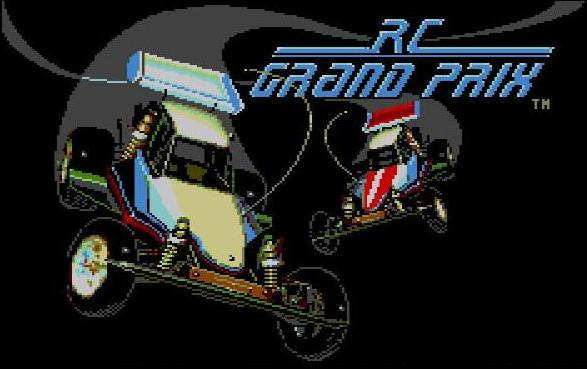
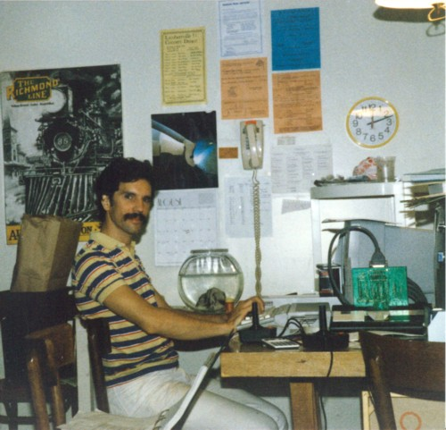
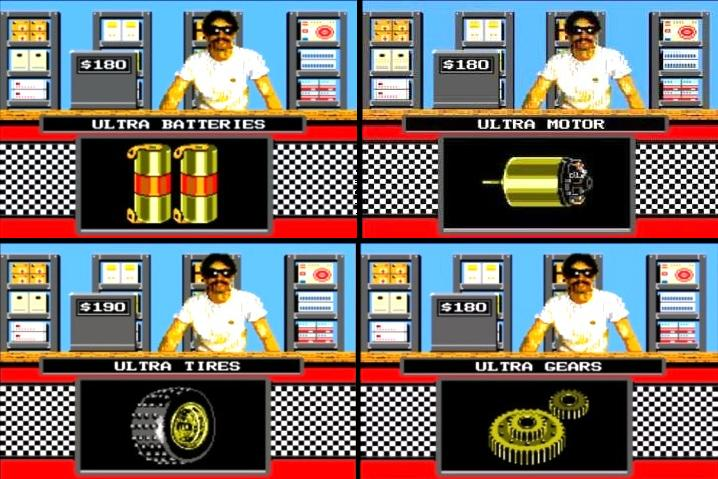
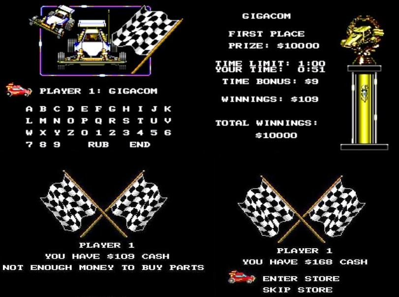
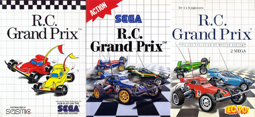

Master System - RC Grand Prix
 :::. Por Gigacom - A primeira impressão que tive do RC Grand Prix quando testei ele lá pelos fins do século XX, no meu finado Master 2, foi um singelo... "eca, que joguinho peba
:::. Por Gigacom - A primeira impressão que tive do RC Grand Prix quando testei ele lá pelos fins do século XX, no meu finado Master 2, foi um singelo... "eca, que joguinho peba ". Claro, que engoli minha propria lingua logo depois que apertei o botão 1
". Claro, que engoli minha propria lingua logo depois que apertei o botão 1 . RC Grand Prix é um jogo que dispensa apresentações. Todo moleque jogador de Master System dos anos 90, pilotou ao menos uma vez aquele carrinho vermelho. Mas como sempre estão aparecendo novos fãs do Master System, vou me dedicar aqui a escrever mesmo que brevemente, um pouco sobre esse incrivel jogo, e claro, os sempre eternos fãs do Master irão descobrir algumas coisas interessantes neste artigo!
. RC Grand Prix é um jogo que dispensa apresentações. Todo moleque jogador de Master System dos anos 90, pilotou ao menos uma vez aquele carrinho vermelho. Mas como sempre estão aparecendo novos fãs do Master System, vou me dedicar aqui a escrever mesmo que brevemente, um pouco sobre esse incrivel jogo, e claro, os sempre eternos fãs do Master irão descobrir algumas coisas interessantes neste artigo!
____________________________________________________________________________
Brinquedos eletrônicos na década de 80 eram uma verdadeira febre. As meninas tinham bonecas que falavam, mini eletrodomesticos que realmente funcionavam (maquina de costura, maquina de fazer sorvete, liquidificador...). Os garotos possuiam mini games, relogios que viravam robozinhos e se faziam quando conseguiam carrinhos de controle remoto do Paraguai, mas desejavam a morte quando viam que o vizinho mais rico tinha ganhado um hyper-carrinho-de-controle-remoto de corrida que a tia trouxe dos States .
.
Tá, tinha uns modelos desses carrinhos no Brasil também, fabricados pela Estrela, e que eram o sonho de consumo de todos fazendo-nos babar até a lingua secar, como o sensacional Colossus, que comia terra e batia no cachorro de tão foda que era. Tinha tambem o Pegasus, que fazia até o Santana 2.0 do pai do vizinho comer poeira! Mas o mais bacana de todos era o Maximus! Esse era carrinho pra tudo quanto é tipo de encrenca. Dava uns pulos muito loucos quando passava nos quebra-molas, fazia uns cavalos de pau mais fechados que esquina de favela, caia em bueiro e saia inteirinho (sujo que era uma beleza, mas funcionando de boa) e até nadava em poças de chuva sem engasgar.
E por que estou falando disso tudo? Oras, RC Grand Prix é um joguinho de competição de carrinhos de controle remoto do mesmo tipo que o Maximus! Na época existiam campeonatos reais desses carrinhos lá nos Estados Unidos, e eram bastante legais. Quem é vei que nem eu, com certeza vai lembrar de um episódio da Punk onde mostra uma competição dessas, com vários tipos desses carrinhos.
No jogo há quatro carrinhos na disputa, sendo que o jogador controla o vermelhinho. Há somente um circuito formado por 10 trajetos separados mas interconectados. Quase sempre um trajeto em uma fase intercepta outro, e não raro o jogador no meio da corrida vai parar em outra pista completamente diferente, simplesmente por ter errado a curva... céus, não raro uma pinóia! Isso acontece direto! Alguns jogadores mais espertinhos, adoram empurrar o carrinho inimigo nas outras pistas fora do percurso, o legal é que quando isso acontece o carrinho da CPU fica perdido, tentando de todo modo voltar à corrida mas acaba fatalmente desclassificado.
Os percusos são bastante complexos, variando em tamanho, nº de curvas, total de voltas e tempo máximo de corrida. Algumas são facéis de percorrer, outras, mesmo quando pequenas, são bastante dificeis pois exigem não só habilidade do jogador em cruzar a pista da melhor forma possivel, como tambem do carrinho que precisa estar bem preparado para ser dirigido sem provocar uma bela derrota.
A cada vitória, o jogador recebe uma certa quantia de acordo com sua qualificação, que deve estar entre as 3 melhores, se chegar em 4º é game over. O dinheirinho ganho é usado para tunar seu carrinho lá na loginha do programador. Ah! Não sabia!? Pois é, o carinha de bigode e óculos escuros da loja é o sr. Scott Marshal! Programador da incrivel engine que dá vida ao RC Grand Prix!!! A idéia de colocar o Scott lá na loginha foi do designer do game, o Jesse Kapili, que fez um desenho do Scott no computador, colocou um óculos para "presevar" a identidade do sujeito, e para não estragar a surpresa, pediu à outro programador que inserisse no jogo a arte que ele fez.

Olha aé o Scott. Vai dizer que não é igualzinho ao carinha da loja !?
!?
Na loja, é possivel comprar diversos itens que variam em preço e qualidade. Baterias, motor, suspensão, pneus, transmissão... com dinheiro e muito esforço é possivel comprar tudo do melhor para o seu caranguinho elétrico. A batéria dá um up legal na velocidade do carrinho, e tambem o mantém por mais tempo na corrida (em percurssos muito longos, uma bateria fraca fara com que o carro simplesmente pare antes de chegar no final). O motor proporciona uma arrancada e retomada muito melhor, além de trazer mais velocidade. A transmissão complementa o desempenho da bateria e do motor. A suspensão faz com que o carrinho faça curva fechadas com mais facilidade e por fim os pneus, que mantem o carango no trajeto sem ficar derrapando feito pato em rio congelado quando fiser as curvas.

Alguns itens da loginha, e umas telas do jogo. Um doce para quem
descobrir como aquele $10.000 apareceu no premio
RC Grand Prix foi lançado em 1989 no exterior, e aqui no Brasil foi um dos primeiros jogos que a Tec Toy publicou para o Master. A primeirissima versão tupiniquim, vinha naquelas caixinhas de papelão, mas o jogo permaneceu popular por bastante tempo, e resistiu bravamente até poder ser relançado em uma capa de plástico.

Da esquerda para direita: versão americana, européia e brasileira.
O game vendeu muito bem em toda parte onde foi lançado. Porém, curiosamente teve pouca atenção aqui nas revistas especializadas da época, independente da idolatria que sempre existiu para esse jogo. Era fácil encontrá-lo para compra nas lojas e tambem para aluguel em locadoras. Tambem, era fácil ter algum conhecido dono de um exemplar do RC Grand Prix.
Devido a originalidade, ao grau de dificuldade e aos bons gráficos, RC Grand Prix virou um sucesso instantâneo. Ele foi adorado não só aqui no Brasil como tambem em todo o mundo. Hoje é um jogo cult, e todo colecionador de Master ou old gamer ama ficar jogando horas a fio esse joguinho simples porém viciante!
Acesse o Trombone e comente sobre essa matéria!


Um dos erros mais imperdoáveis da Sega. Em 90/91 mais ou menos, a Sega ganhou da Tecmo a oportunidade de fazer umas versões do Ninja Gaiden para os seus consoles. Essa chance é comparável ao que Deus fez quando deu o mundo para Adão... bem, o final tanto de Adão quanto da Sega nesse caso são semelhantes.
Albert Odyssey é um dos jogos mais amados pelos fãs do Saturn. Com uma história simples mas rica, dramatica e emocionante, encantou muita gente que naquele inicio da era 32 bits, ainda não estava acostumada com trilha sonora feita com instrumentos de verdade e gráficos cheios de luz e efeitos. Mas, não era para ser assim com esse jogo...